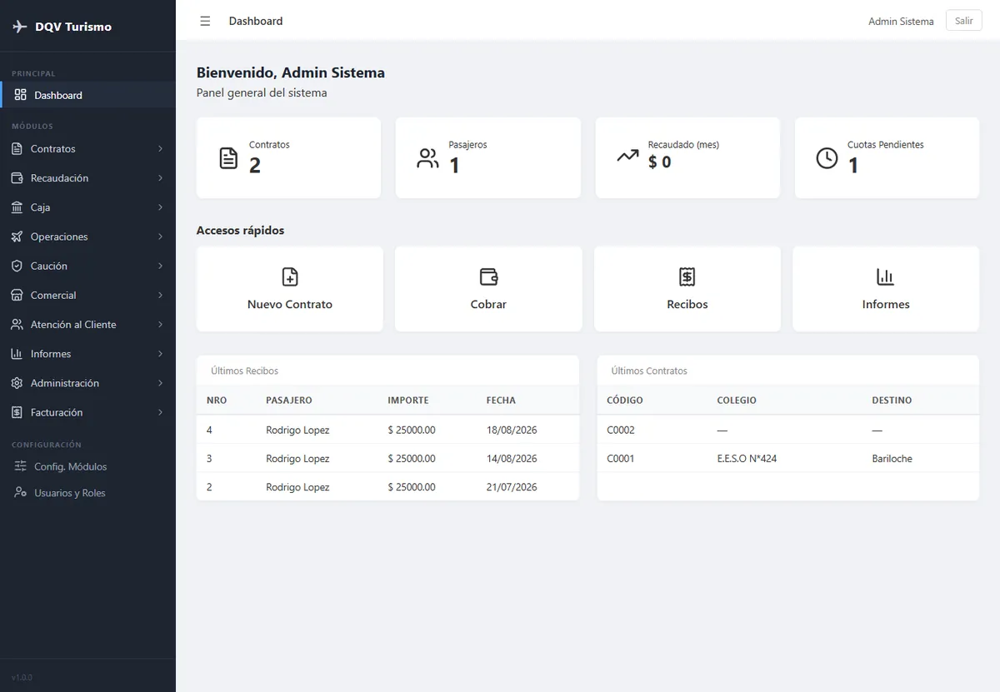

DQV Turismo — Sistema de gestión integral
Desarrollé una plataforma de gestión para una empresa de turismo estudiantil que necesitaba reemplazar un sistema anterior que había quedado limitado y sin mantenimiento.
Ver másVer menos
El nuevo sistema está adaptado a la forma de trabajo de la empresa y reúne en un solo lugar distintas áreas de la operación. Cuenta con 11 módulos, incluyendo gestión de colegios, hoteles, seguros, viajes, contratos, caución y pasajeros, entre otros.
También incorpora un sistema de usuarios y roles, que permite definir qué acciones puede realizar cada empleado según sus responsabilidades.
El sistema se encuentra en producción y continúa evolucionando con mantenimiento y nuevas funcionalidades.